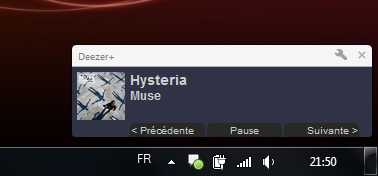

Deezer+ peut mettre à jour votre profil Last.fm automatiquement en fonction de la musique que vous écouterez sur Deezer. Pour cela cochez la case suivante et connectez vous à Last.fm.
Pour que Wikipédia s'affiche dans votre langue il faut que vous renseigniez le champ suivant, correspondant au code de votre langue. Vous le trouverez dans l'url de la page d'accueil de Wikipédia. Les articles pourront ainsi être récupérés.
Pour tester que la valeur que vous avez renseigné est correcte essayez d'afficher cet article : http://fr.wikipedia.org/wiki/The_Beatles
Les articles de Wikipédia sont distribués sous les termes de la licence Creative Commons Paternité-Partage des Conditions Initiales à l'Identique 3.0 Unported (CC-BY-SA 3.0 Unported) et de la licence de documentation libre GNU (GFDL).
Deezer+ peut afficher une pop-up avec le nom du morceau en cours de lecture.
Last.fm sera utilisé pour récuperer les pochettes d'album affichées dans les notifications pour la musique que vous avez envoyé sur Deezer.
Activez l'intégration de Windows Live Messenger.
Certaines parties de l'interface de Deezer sont inutiles et méritent d'être bannies de l'écran.
Vous pouvez également étendre l'affichage du player à votre fenêtre.